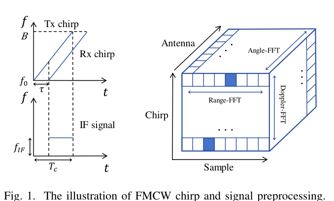
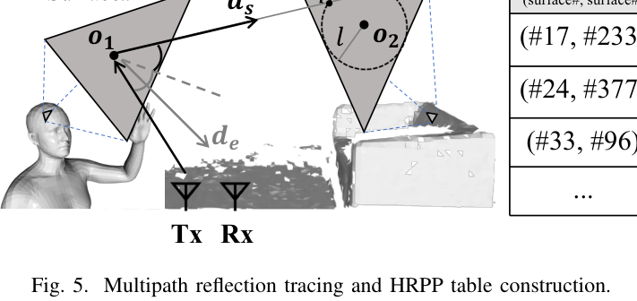
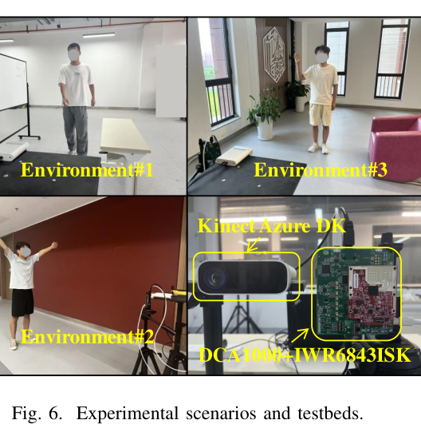
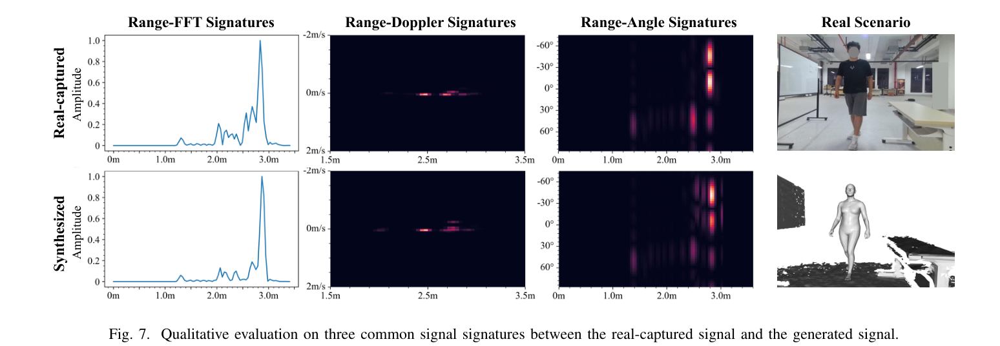
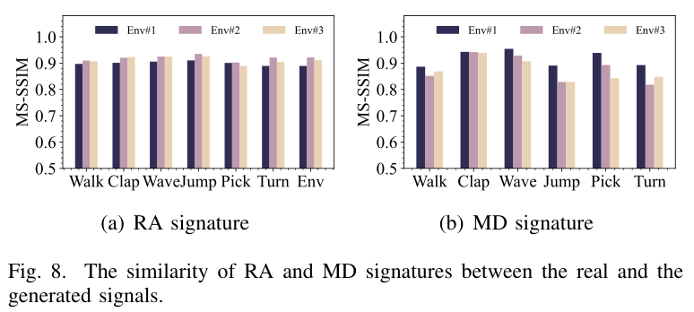
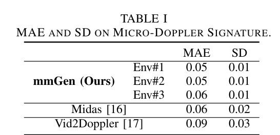
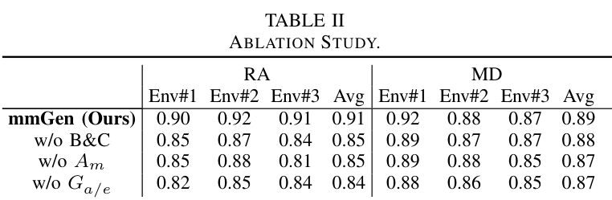
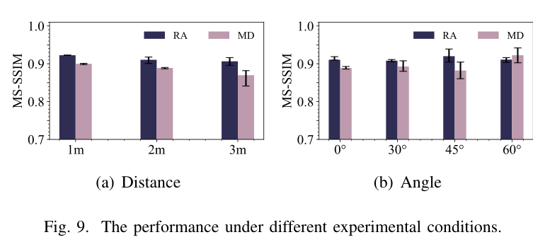
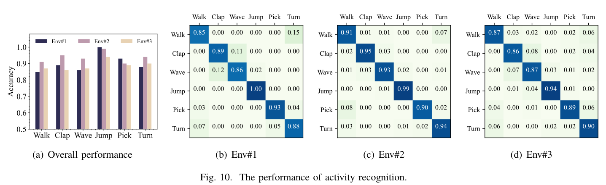

IEEE INFOCOM 2025
Publication
One Snapshot is All You Need: A Generalized Method for mmWave Signal Generation
Teng Huang (XJTU), Han Ding (XJTU), Wenxin Sun (XJTU), Cui Zhao (XJTU), Ge Wang (XJTU), Fei Wang (XJTU), Kun Zhao (XJTU), Zhi Wang (XJTU), Wei Xi (XJTU)
mmGen is a generalized software-based framework for synthesizing realistic full-scene FMCW mmWave signals from one captured environment snapshot and constructed 3D human/environment meshes.
mmWave Signal Generation
XJTU
Overview
Collecting large and diverse mmWave sensing datasets is expensive, time-consuming, and usually tied to one downstream task or annotation format. One Snapshot is All You Need introduces mmGen, a generalized framework that generates realistic FMCW mmWave signals from a single snapshot of the environment plus constructed 3D meshes.
Instead of generating only task-specific signatures such as micro-Doppler maps or point clouds, mmGen models the original signal formation process. It synthesizes human-reflected, environment-reflected, and multipath-reflected mmWave signals, so the generated data can support broader mmWave sensing tasks such as activity recognition, pose estimation, localization, and tracking.
Main Contributions
- Proposes mmGen, a generalized full-scene mmWave signal generation framework that does not rely on deep-learning-based signal generators.
- Models human reflections and environment reflections in a unified physical signal synthesis pipeline.
- Incorporates practical factors including material properties, antenna gains, and multipath propagations to improve realism.
- Supports human mesh construction from either video data or textual motion descriptions, making the generated data more flexible for downstream sensing tasks.
- Builds a prototype with commercial mmWave devices and Kinect sensors, showing strong similarity between synthesized and real-captured signals across three environments.
FMCW Signal Background
mmGen targets FMCW mmWave radar signals. The transmitted chirp and received chirp are mixed into an intermediate-frequency signal, then processed through range, Doppler, and angle FFTs to obtain common sensing signatures. By synthesizing signals before these task-specific preprocessing steps, mmGen keeps the generated data useful for multiple downstream tasks.

mmGen Design
The system decomposes signal generation into three parts. First, the human-reflected signal synthesizer represents the body as a SMPL-style 3D mesh and computes reflection points from triangular surfaces. Second, the environment signal compensator constructs a 3D environment mesh from one depth-camera snapshot, accounting for furniture layout, material properties, and antenna gain. Third, the multipath reflection tracker uses high reflection probability planes (HRPP) to efficiently approximate dominant two-bounce multipath reflections in dynamic indoor scenes.

Prototype and Dataset
The prototype uses a TI IWR6843ISK mmWave radar with DCA1000, together with a Kinect Azure DK for RGB/depth capture. The evaluation covers three environments: an indoor furniture scene, a corridor scene, and a scene with sofa/window/plant reflectors. Six volunteers perform six motions: walking, clapping, waving left hand, jumping jacks, picking up a stone, and turning around.
The paper defines three datasets: D1 for real-captured mmWave signals, D2 for synthesized signals generated from RGB-derived human meshes and Kinect environment meshes, and D3 for synthesized signals generated from text-described motions through a diffusion-based motion model.

Signal Generation Quality
Qualitatively, mmGen reproduces range-FFT, range-angle, and range-Doppler signatures that align closely with real captures. In particular, the range-angle signature captures not only human reflections, but also environmental reflectors such as boards and tables.

Quantitatively, the average MS-SSIM similarity between real and synthesized signatures reaches 0.91 for range-angle signatures and 0.89 for micro-Doppler signatures across three environments.

Compared with prior video-to-radar generation methods, mmGen achieves competitive or better micro-Doppler reconstruction quality while remaining a physical, scenario-adaptable signal generator.

Ablation and Robustness
The ablation study shows that body/environment construction, material modeling, and antenna gain modeling all improve signal realism, especially for range-angle signatures in complex scenes. Micro-benchmarks further show that mmGen remains stable across different subject distances and body rotation angles.


Downstream Case Study
As a downstream case study, the paper trains an activity recognition model using generated signals and evaluates it on real captures. The model achieves strong recognition accuracy across all three environments, with most confusion occurring between walking and turning around because some generated turning samples include short walking segments.

Resources
- Code: friendlyCamel/mmGen
- arXiv abstract
- arXiv PDF
- Local overview figure
- Local qualitative signatures
{kind=link}
{kind=link}
Citation
@inproceedings{huang2025mmgen,
title = {One Snapshot is All You Need: A Generalized Method for mmWave Signal Generation},
author = {Huang, Teng and Ding, Han and Sun, Wenxin and Zhao, Cui and Wang, Ge and Wang, Fei and Zhao, Kun and Wang, Zhi and Xi, Wei},
booktitle = {IEEE INFOCOM},
year = {2025}
}